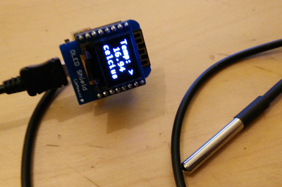
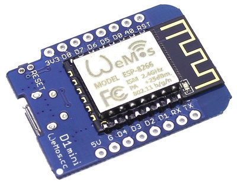
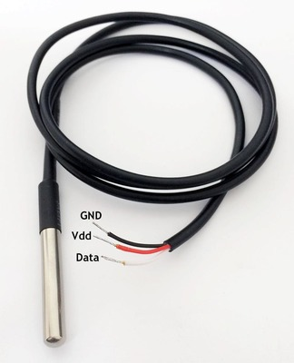
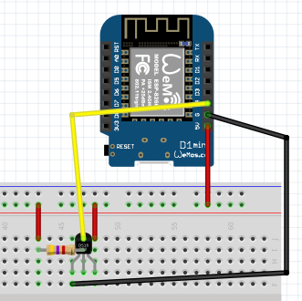
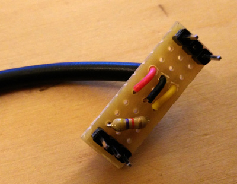
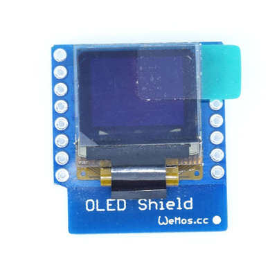
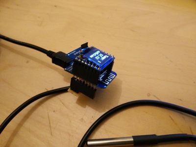
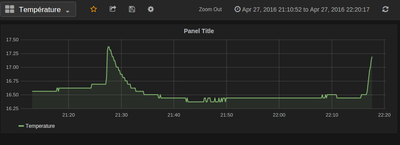
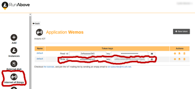

Dans cet article nous allons fabriquer un “objet connecté”: un thermomètre qui envoie les mesures sur internet. Et tant qu’à y être on le faire pour moins de 10€ !
Pour ce faire, nous avons besoin:
- D’un capteur de temprérature DS18B20
- D’un afficheur led
- D’un microcontrolleur avec wifi intégré ESP8266
Le matériel
ESP8266
Cette puce intègre un module wifi. J’ai choisi l’implémentation faite par Wemos (http://www.wemos.cc/), et plus particulièrement le Wemos D1 mini.

Les avantages:
- C’est petit
- C’est compatible Arduino
- Pas cher (on le trouve facilement à moins de 4€ chez les Chinois)
Vous aurez à souder les pins vous-même. Il vous faut donc un fer à souder.
La sonde de température DS18b20
C'est un capteur numérique très précis. On y accède par le protocole i2c, cest à dire que 3 câbles suffisent (voire 2) pour mettre en oeuvre ce capteur. Vous trouverez plus d’informations avec la datasheet. J’ai fait l’acquisition de la version étanche pour 3€

Le protocole 12c
C’est un protocole qui permet de communiquer avec plusieurs périphériques avec un seul cable de données. Chaque périphérique a donc une adresse. Chaque fois que l’on veut communiquer avec un périphérique, on passe d’abord l’adresse (bit par bit sur la ligne de données), puis les données. Le constructeur doit fournir cette adresse
Le DS18B20 a une petit particularité : chaque capteur fabriqué a sa propre adresse. Ce qui permet d’utiliser plusieurs DS18B20 sur la même ligne. Le constructeur a prévu une procédure pour découvrir les adresses des capteurs connectés sur la ligne. et la librairie OneWire implémente cette méthode (search).
Brochage
- GND sera connecté au GND du Wemos
- VDD sera connecté au 5V du Wemos
- Data sera connecté à la pin D4 du Wemos
- Il nous faut une résistance de 4,7K entre 5V et D4 (résistance de pull-up)

J’ai fait mon propre shield pour que ce soit plus simple à brancher. Les pins en haut à droite ne servent à rien (juste une fonction mécanique). Vous remarquerez la résistance de 7,7K entre le fil rouge (5V) et le fil jaune (Data)

L’afficheur
Il n’est pas indispensable, mais vu sont prix (moins de 5€), on va pas s’en priver. On pourra afficher la température directement (sans être obligé de consulter internet). Il existe une version pour Wemos (OLED shield)

Comme pour le Wemos, il faudra souder !
On assemble tout
Ca donne quelque chose comme ça:

Principe de fonctionnement
Le montage fera les opérations suivantes:
- Se connecter au wifi
- Récupérer l’adresse du capteur
- Lancer une acquisition de température
- Envoyer les données sur internet
On envoie où ?
Nous allons utiliser un service d’OVH : https://www.runabove.com/iot-paas-timeseries.xml
C’est un service prévu pour l’IOT; on y pousse des données de capteurs. Ces données sont datées. Ensuite, pour les bidouilleurs, on s’installe un server avec Grafana (Grafana, nativement, sait récupérer les données depuis l’IOT d’OVH) et on obtient quelque chose comme ça:

Créer son compte IOT chez OVH
- Rendez-vous sur la page https://www.runabove.com/iot-paas-timeseries.xml
Cliquez sur le bouton “Start now” et créez-vous un compte “Runabove” (https://cloud.runabove.com/signup/?launch=iot) - Sur le menu de gauche, cliquez sur “Internet of things”
Créez une nouvelle application avec Nom, Description et le cluster (SBG-DEDICATED-OVH)
L’application vous fournit deux paire de crédentials; un pour lire et un pour écrire. Nous utiliserons les crédentials d’écriture dans notre programme chargé dans le Wemos (la paire de lecture sera utilisée dans Grafana)
Le graphique
Vous trouverez un bon tuto pour installer Grafana et le brancher sur l’IOT d’OVH (http://blog.toorop.fr/paas-iot-time-series-ovh-tutoriel/)
Vous pouvez faire l’acquisition d’un petit VPS chez OVH (https://www.ovh.com/fr/vps/vps-ssd.xml)
Le programme
Il est disponible sur github: https://github.com/landru29/iot-wemos-temperature
Pour l’utiliser, il vous faudra :
- Arduino 1.6.8 minimum
- Installer OneWire (depuis Arduino, menu Croquis > Inclure une Bibliothèque > Gérer les bibliotèque) pour utiliser le protocole i2c avec découverte d’adresse
- Installer le support ESP8266 (depuis Arduino, menu Outils > Type de carte > Gestionnaire de carte puis recherchez ESP8266)
- Pour l’écran, il vous faut installer OLED de sparkfun. La version officielle ne fonctionne pas correctement sur Wemos. Récupérez mon fork https://github.com/landru29/SparkFunMicroOLEDArduinoLibrary et copiez le dans sketchbook/libraries
Faites une copie de config.h.sample en config.h et modifiez les mots de passe:
- ssid => c’est le nom du wifi
- password => c’est le mot de passe du wifi
- iotId et iotKey (La ligne “write”)

On décortique tout ça
Pour commencer, le programme se connecte au wifi local avec le SSID et le mot de passe fourni dans config.h
On est connecté au réseau !
Toutes les requêtes sont en HTTPS; c’est à dire qu’elles sont chiffrées. Les clefs de chiffrage (fingerprint) sont récupérées sur le site https://www.grc.com/fingerprints.htm
Pour pousser les données sur IOT, il faut un timestamp (c’est le nombre de secondes écoulées depuis le 1er janvier 1970). Le programme récupère un timestamp depuis l’api d’OVH. Ensuite, toutes les secondes, ce timestamp est incrémenté. On utilise un timer pour ça (timestamp.cpp)
Pour faire l’aquisition de température, il faut, tout d’abord, découvrir l’adresse du capteur. On le fait une fois pour toute avec ds.search(addr). Ensuite, on lance une acquisition, on laisse le temps au capteur de faire sa mesure (1 seconde, car on est en haute précision: 0.06°c). Reste à lire la mesure. Pour info, la mesure est stoquée dans une eeprom interne au capteur, qui est données pour 50000 écritures seulement.Selon la fréquence de mesure, vous aurez vite-fait flinguer votre capteur.
Reste à envoyer les données vers IOT. on construit les données au format JSON, on ajoute les crédentials dans l’entête de la requêtes et c’est parti ! Si la réponse de l’API IOT est vide, c’est que tout s’est bien passé.
Tout au long du programme, on envoie des données sur la console série (accessible depuis Arduino, si le wemos est branché à votre ordinateur), et sur l’afficheur à led (addresse IP, puis les mesures de tempétature). Un curseur animé permet de savoir où on en est:
- Une barre qui tourne => on ne fait rien
- “?” => mesure de température
- “>” => envoie de la mesure sur IOT